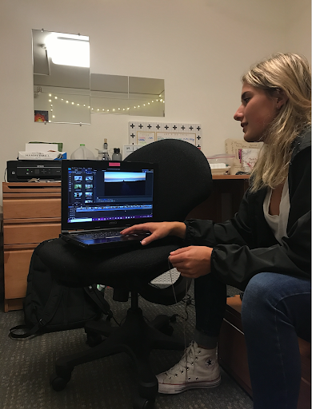
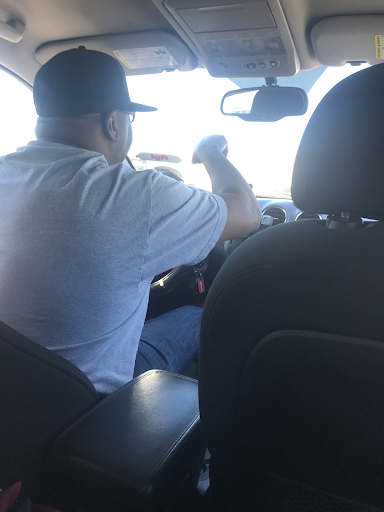
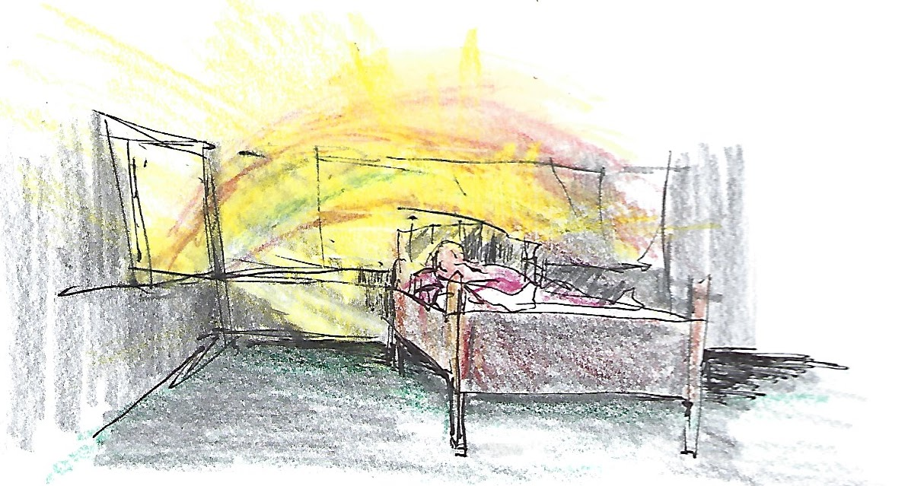

Empathize
Needfinding
We started with a few questions like the following:
- Tell me about your happiest moment.
- Tell me about a time you felt negative emotions.
- How are things different in your life this year?
- How do you recount the emotional changes in your life?
- Tell me about something that triggered your memory.
We interviewed numerous people who shared how memory played a part in their lives and dug deeper into how they prefered to create, reflect, and organize their memories. There were interesting tensions between how people wish to journal past experiences and the actual ways they go about doing so (or the lack thereof).

We met Kasia, an amateur Youtuber who creates monthly montages of her past notable experiences and keeps a personal journal to reflect on her daily experiences.
We were amazed to realize that Kasia can evoke clearer feelings, emotions, and sensations in herself from the songs, images, and physical objects she associates with specific memories.
It would be game-changing to give people a multimodal outlet to attempt to refeel specific experiences.

We met Michael, a full-time Lyft driver who knows the entire Bay Area “like the back of his hand.”
We were amazed to realize that Michael preferred to talk about his experiences with others to solidify their memories.
It would be game-changing to provide people with an “extro-spective” outlet to reflect out-loud about their personal thoughts, feelings, and emotions.

We met Barr, a psychiatrist in his early 70s.
We were amazed to realize that once he created intricate, emotionally grounding drawings, it didn’t matter to him what happened to them.
It would be game-changing to be able to cement memories without keeping physical artifacts.
Through our interviews, we identified the following needs through empathy mapping:
- Record and capture the feelings of memories
- Understand and organize memories
- Invoke context to trigger recall
- Share memories with others and collaborate during the recollection process